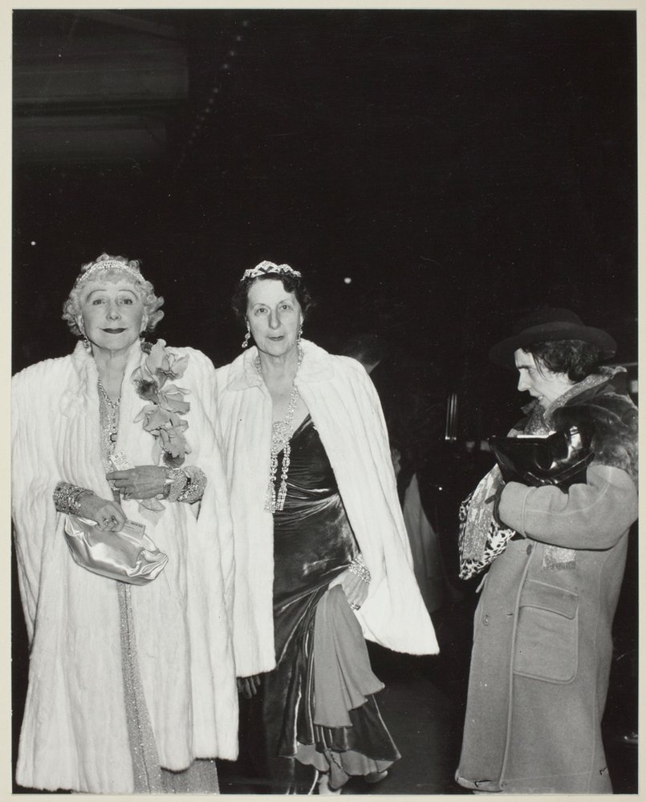

The Critic
Weegee (Arthur Fellig) · 1943 · Gelatin silver print · 26.9 × 34 cm · Art Institute of Chicago
In copyright. Look and learn: shown for study, not for download.
Society women in ermine and tiaras arriving at the Metropolitan Opera, and a woman from the street beside them: it was later revealed that Weegee had staged the scene. The same year, 1943, the Museum of Modern Art bought five of his photographs and showed them in its exhibition Action Photography. Magazine work for Life and Vogue followed, and his first book, Naked City, came out in 1945.